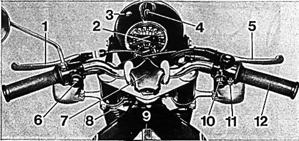
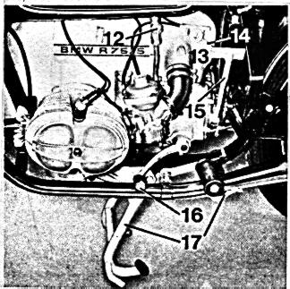
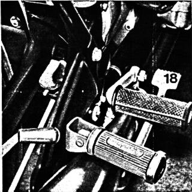
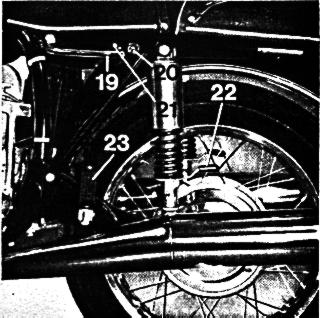
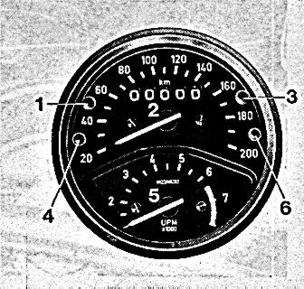
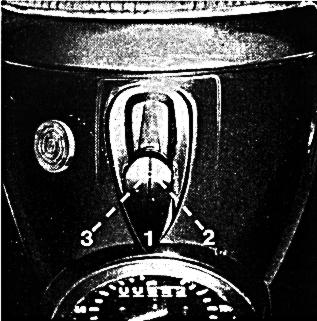
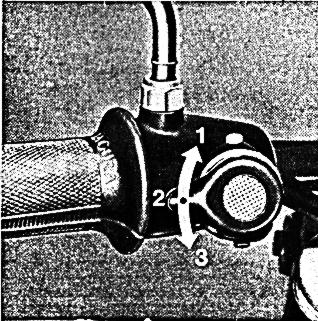
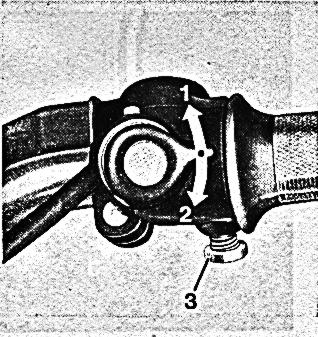
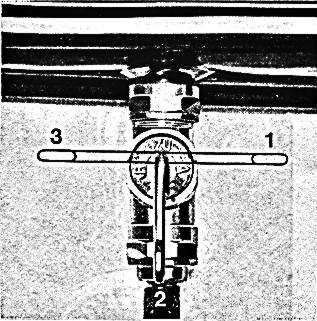
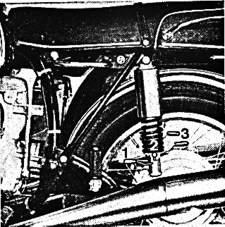

Operating Controls at a Glance
1. Clutch Lever
2. Instrument Cluster containing Speedometer and Odometer,
Tachometer, Oil Pressure Indicator Light,
High Beam Indicator Light,
and Neutral Indicator Light.
3. Turn Signal Indicator Light
4. Ignition and Light Switch
5. Front Brake Lever
6. Dimmer Switch, Horn Button, and Passing Light Flasher
7. Steering Damper
8. Fork Lock,
the fork lock key also operates the lock of the dual seat
9. Fuel Filler Cap
10. Turn Signal Switch and Starter Button
11. Throttle Grip Tensioner
12. Throttle Grip
Fig. 1
1

12. Fuel Petcock
13. Air Filter Housing
14. Choke Lever (R 15/5)
15. Kick Starter
16. Gear Shift Lever
17. Center Stand -- Side Stand
18. Foot Brake Lever
19. Lifting Handle
20. Dual Seat Lock
21. Dual Seat Release Button
22. Rear Spring Tensioner
23. Folding Passenger Foot Rests
Fig. 2-4
2

3

4

Instrument Cluster
1. High Beam Indicator Light, Blue
2. Speedometer with Odometer
3. Battery Charging Indicator Light, Red
4. Neutral Indicator Light, Green
5. Tachometer
6. Oil Pressure Indicator Light, Orange
Figure 5
5

Ignition and Light Switch
Pull protective slide cover forward and insert ignition key
and push it down.
Position 1 of Ignition Key:
The Ignition is switched on.
The charge indicator shows that the battery is adequately charged.
Position 2 of Ignition Key:
The ignition and headlight are switched on.
Position 3 of Ignition Key:
The ignition and the parking lights are switched on.
When pulling the key out from this position,
the parking lights will stay on.
Figure 6
6

Dimmer and Signaling Switch
Position 1: High Beam
Position 2: Low Beam
Position 3: Passing Light Flasher,
spring loading automatically returns switch to Position 2.
Switch Depressed: Horn
Figure 7
7

Steering Damper
By turning the stering damper knob clockwise the friction damper
will prevent the fork from being turned while the motorcycle is
parked or transported.
Turn Signal Switch, Starter Button
Position 1: Indicates left turn
Position 2: Indicates right turn
Switch Depressed: Starter Actuation
Friction Lock for Throttle Assembly
The throttle grip is self closing.
A cruising setting can be attained by
turning the set screw No. 3 clockwise.
Figure 8
8

Fuel Petcock
Position 1: Fuel Petcock "open"
Position 2: Fuel Petcock "closed"
Position 3: Fuel Petcock "Reserve"
Figure 9
9

Rear Suspension Adjustment
Position 1: for Solo operation
Position 2: for Rider plus Baggage
Position 3: for two-up riding
Figure 10
10
